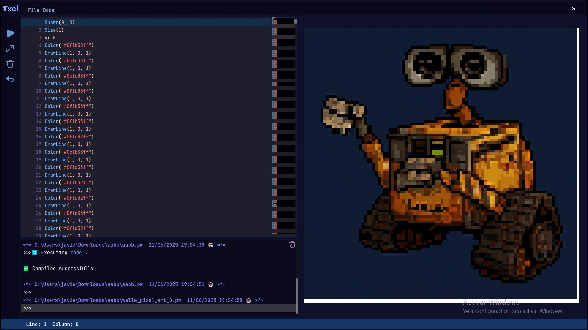

Transforma Ideas en Pixeles Vibrantes con πxelWallE.
Desbloquea una dimensión creativa sin límites. πxelWallE es el IDE de nueva generación que fusiona la potencia del código con la magia del pixel art, diseñado para artistas y desarrolladores que buscan ir más allá.
Empieza a Codificar tu Arte Hoy. ¡Descarga πxelWallE!Codifica, Crea, Conquista: Tu Suite de Pixel Art Completa
IDE de Vanguardia
Un entorno de desarrollo integrado que no solo es competitivo, sino que redefine cómo interactúas con tu arte. Disfruta de una interfaz intuitiva, herramientas potentes y una experiencia de codificación fluida, optimizada para la creación de pixel art.
El Lenguaje del Mañana
Desarrollado con un lenguaje de programación moderno y eficiente, πxelWallE te permite esculpir tus creaciones pixel a pixel con sintaxis clara y funcionalidades avanzadas. Diseñado para ser potente en manos de un desarrollador experto y sorprendentemente accesible para el joven entusiasta.
Ciclo Creativo Sin Fisuras: De Imagen a Código y Viceversa
¿Tienes una imagen que amas y quieres deconstruir o recrear? πxelWallE la convierte en código listo para editar. Y cuando tu masterpiece está lista, transpórtala de nuevo a formato de imagen con un solo clic. Experimenta un flujo de trabajo que elimina barreras y amplifica tus posibilidades.
¿Listo para Pintar con Líneas de Código?
πxelWallE es para los creadores audaces, para los jóvenes mentes curiosas que sueñan con diseñar sus propios videojuegos y personajes, y para los desarrolladores experimentados que buscan la herramienta definitiva para integrar el pixel art en sus proyectos. Si amas el arte, si te apasiona la programación, o si simplemente buscas una forma fresca y potente de expresarte digitalmente, has encontrado tu nuevo lienzo.
Mira pixelWallE en Acción
Una vista del editor con código pixelWallE y la previsualización de arte.
